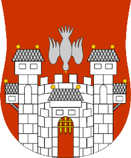
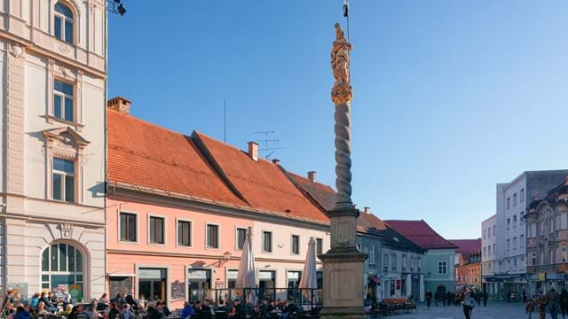
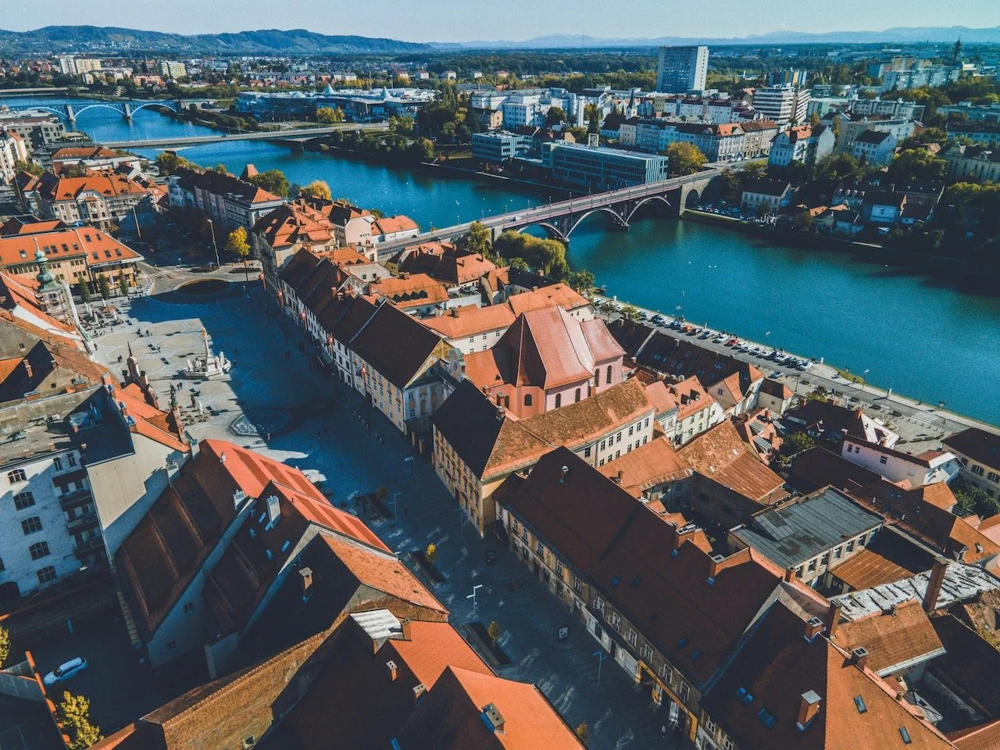
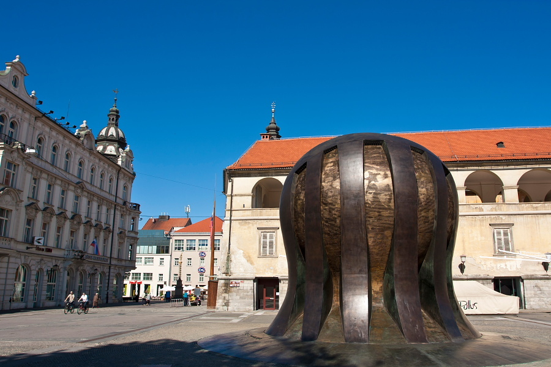
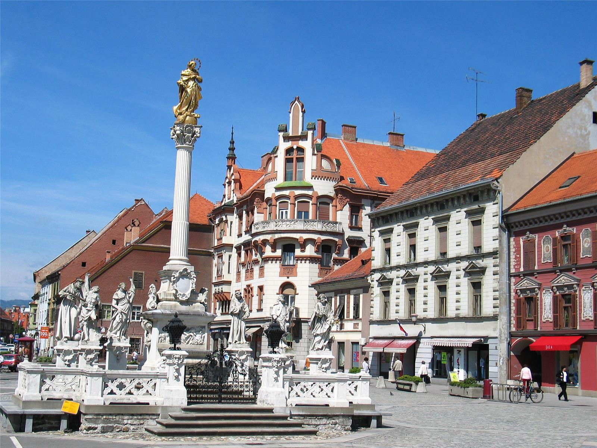
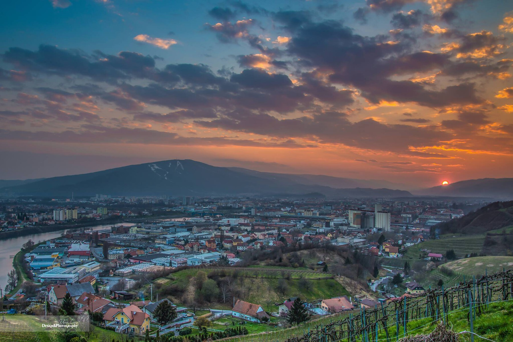

Postani del spremembe
Pridruži se platformi in pomagaj soustvarjati boljšo prihodnost svoje občine. Tvoje ideje, mnenja in predlogi lahko prispevajo k resničnim spremembam v lokalnem okolju.
SKUPAJ ZA BOLJŠI MARIBOR

O platformi
Naša platforma povezuje prebivalce in občino z enim skupnim ciljem – ustvariti boljše, varnejše in prijaznejše okolje za življenje. Tukaj lahko občani oddajo svoje predloge, izrazijo mnenje o pomembnih projektih ter sodelujejo pri oblikovanju prihodnosti svojega kraja.
S sodelovanjem prebivalcev občina lažje razume dejanske potrebe ljudi in sprejema odločitve, ki imajo pozitiven vpliv na skupnost. Vsak glas šteje in vsak predlog lahko pripomore k izboljšavam v lokalnem okolju.
Moj račun
Vsak uporabnik ima svoj profil, kjer lahko spremlja oddane predloge, pridobljene značke, sledilce ter ureja svojo profilno sliko. Profil omogoča pregled aktivnosti in sodelovanja uporabnika na platformi.
KAJ OMOGOČA SPLETNA STRAN?

Sodelovanje
Občina in prebivalci skupaj tvorijo skupnost. Veliko težav in idej opazijo ravno občani, saj so vsakodnevno prisotni v svojem okolju. Zato je pomembno, da imajo možnost izraziti svoje mnenje.
Platforma vključuje prostor za razprave, kjer lahko uporabniki delijo izkušnje in ideje. Namen razprav je spodbujanje sodelovanja, povezovanja občanov ter iskanje skupnih rešitev za probleme v lokalnem okolju.
Za pošiljanje zasebnih sporočil mora uporabnik najprej poslati prošnjo za komunikacijo, kar zagotavlja večjo varnost in boljšo uporabniško izkušnjo.

Podpora
Uporabniki lahko podprejo dobre pobude in tako aktivno sodelujejo pri izbiri projektov za mesto. Na strani s predlogi lahko s klikom na palec navzgor oddajo glas, da posamezno idejo podprejo, s čimer se najbolj priljubljeni predlogi dvignejo na vrh seznama.
Poleg glasovanja imajo uporabniki tudi možnost dodajanja komentarjev, kjer lahko podajo svoje mnenje ali dodatne predloge k objavljeni pobudi.

Predlogi in skupnost
Občina lahko objavlja projekte, načrte in ideje, za katere želi pridobiti mnenje prebivalcev. Občani lahko sodelujejo pri razpravah in pomagajo pri sprejemanju pomembnih odločitev.
Uporabniki platforme pa lahko tudi oddajo svoje predloge za izboljšave v občini, dodajo opis problema ter po potrebi priložijo sliko lokacije oziroma problema. Na ta način lahko občina hitreje prepozna težave in določi prioritete.

Spremljanje
Ko predlog zbere dovolj glasov in podpore, gre naprej v roke občini, ki preveri, kako bi se idejo dalo uresničiti. Uporabniki lahko nato ves čas spremljajo, kaj se s predlogom dogaja.
Sistem sproti prikazuje, ali je stvar še v obdelavi, ali se že izvaja na terenu, ali pa je bila morda zavrnjena. Tako je vedno jasno, v kateri fazi je posamezna ideja in kdaj bo postala del našega mesta.

Nagrajevanje
Tisti, katerih predlogi bodo izbrani in potrjeni za izvedbo, bodo za svoj trud tudi nagrajeni. Kot zahvalo za aktivno sodelovanje pri izboljšanju naše občine bodo prejeli štiri brezplačne vožnje z mestnim avtobusom.
S to majhno pozornostjo želimo spodbuditi čim več občanov, da delijo svoje ideje in pomagajo soustvarjati boljšo prihodnost za vse nas.